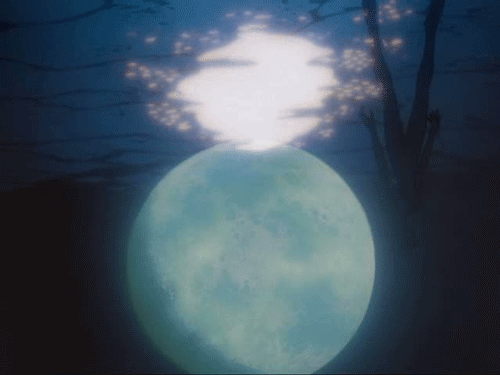

Image Sources and information from the wiki:
https://evangelion.fandom.com/wiki/Angel
This site is a work in progress and was started to practice HTML and CSS skills.

Sachiel (サキエル[?], "Sachiel"), Hebrew זכיאל, is the Third Angel in the original anime,
and the first one to appear fifteen years after Second Impact. First emerging out of ocean
east of Tokyo-3, the Angel makes it way towards the fortified city and engages in combat
with Evangelion Unit-01 during its first operational mission.

Using Unit-01, Shinji tries to shoot Shamshel with his Pallet Rifle, but fails to neutralize
its A.T. Field and only ends up obscuring the target with smoke. Shamshel then strikes out
of the smoke, lashing out with its energized whips, destroying the palette rifle and driving
Shinji into a panic. The Angel proceeds to drive back the Eva, ripping apart buildings with
its energy whips in the process. Unit-01's umbilical cable is also severed with the destruction
of one of the buildings (it might have been the electrical building the Eva was connected to),
before an energy whip grabs his leg and throws him high into the air, into on a nearby mountainside.

Ramiel (Hebrew: רעמיאל) is the Fifth Angel, one of the largest and second most powerful. Ramiel becomes
the first Angel to physically penetrate the Geofront when its drill bit breaks through the armor.
It is defeated during Operation Yashima (ヤシマ作戦).

Gaghiel attacked the UN Pacific fleet as it was delivering Unit-02 and (secretly) the preserved embryonic
Adam to NERV. Gaghiel was searching for the Adam embryo, but because the presence of the embryo was secret
(apparently even from SEELE), NERV officially reported that Gaghiel was drawn by Unit-02. It managed to damage
or destroy almost one third of the UN's combined fleet.

After emerging from the ocean, Israfel was engaged by Asuka and Shinji. Defying orders to attack in sync with Shinji,
Asuka assaulted the Angel alone, cleaving it in two. Shocking everyone, Israfel split into its twins, and decisively
defeated Asuka and Shinji. To NERV’s embarrassment, the UN Secondary Command was allowed to take over the battle, and an
N² depth charge was dropped on the Angel, vaporizing 28% of its mass. The Angel was incapacitated for roughly six days,
during which time it recovered from its injuries.